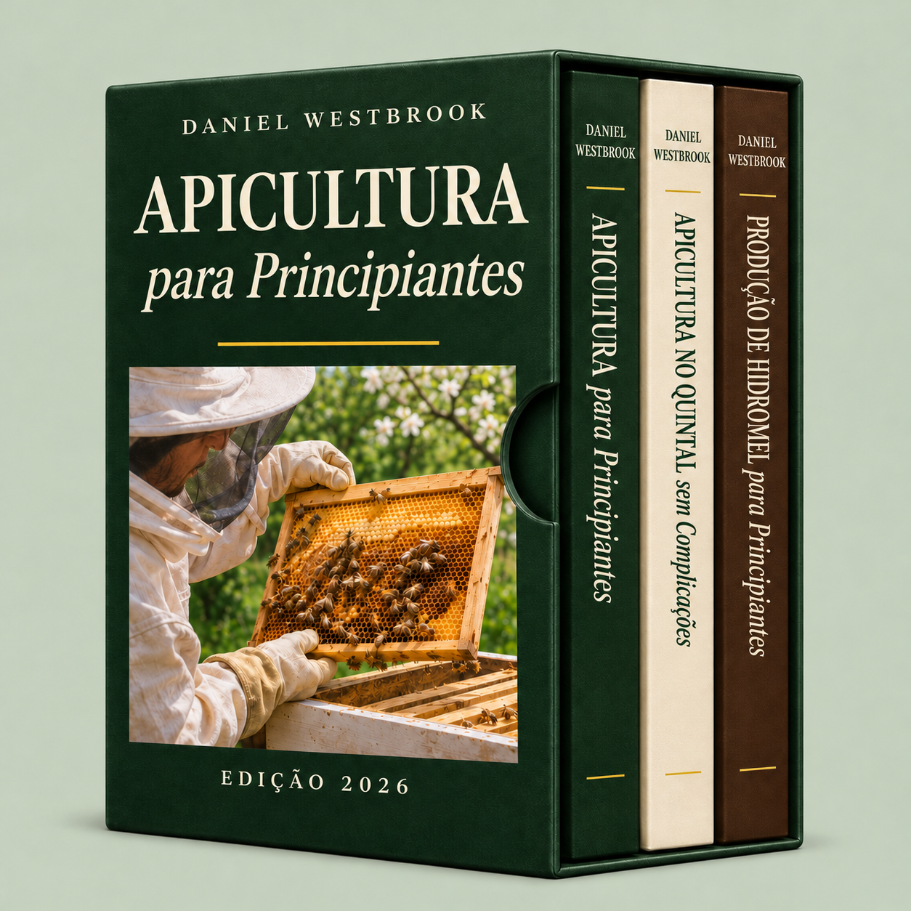

A COLEÇÃO DE DANIEL WESTBROOK
Da tua primeira colónia ao teu próprio mel.

Compreender. Observar. Crescer.
A TUA ÁREA DE MEMBROS
A tua aventura
A tua aventura
com as abelhas
começa aqui.
Que bom ter-te aqui. Descobre o mundo das abelhas com conhecimentos que te acompanham desde o primeiro passo.
A TUA BIBLIOTECA PESSOAL
Entrar na área de membros
Compreender os fundamentos. Criar abelhas no quintal. Descobrir a arte de fazer hidromel.
Lê os três livros aqui ou descarrega-os em PDF.
- 3
- Livros
- 180
- páginas de saber
- O teu ritmo
- Para principiantes